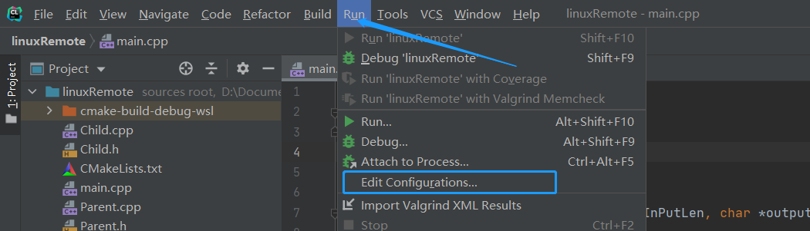
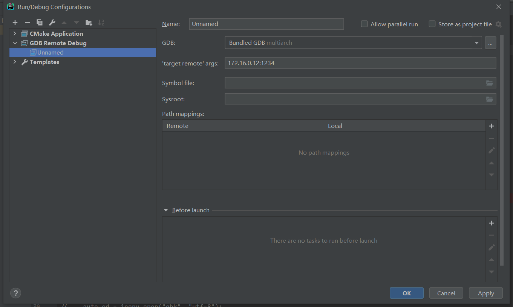
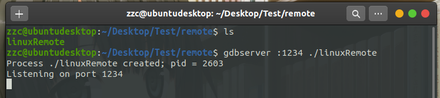
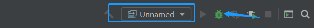
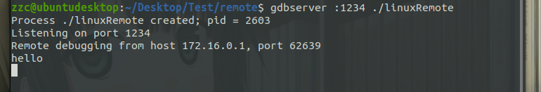
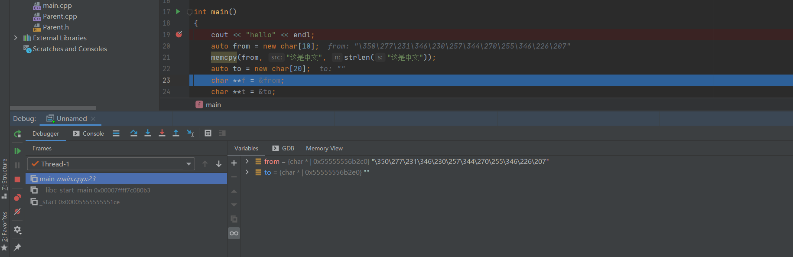
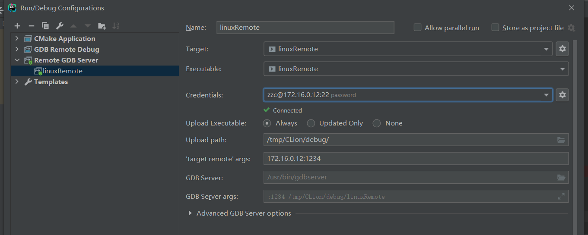
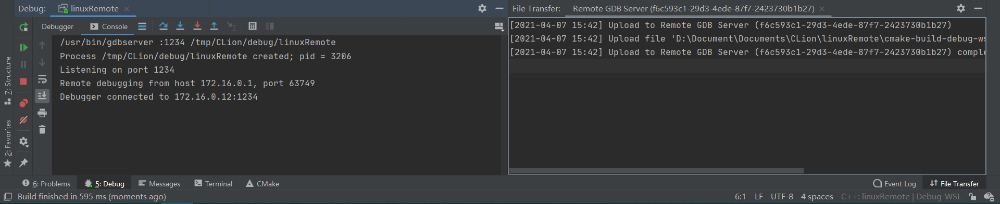
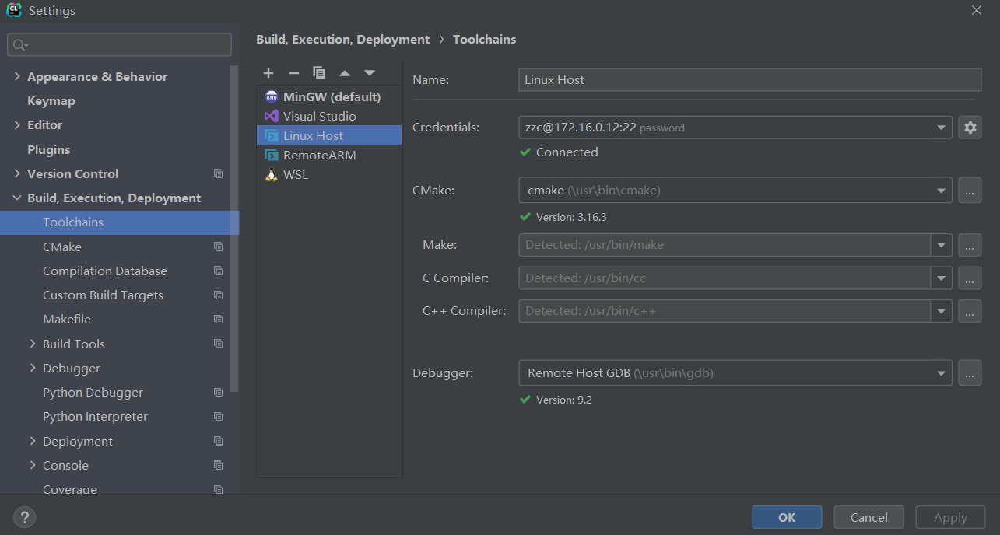

CLion 远程开发
[toc]
引言
不是所有目标机器都会有开发环境，或者说有些机器直接不支持安装开发环境，这个时候就需要远程调试了。但是远程调试 gdbserver 和 GDB 的命令又太多，记不住且工作效率低，所以需要借助一定的工具，幸好 CLion 就为远程调试提供了一系列的解决方案。
使用 GDB/gdbserver
如目标机器上不支持开发环境的话，GDB/gdbserver 远程调试是一个不错的解决方案。将生成的二进制文件放在目标机器上通过 gdbserver 启动，就可以使用 CLion 连接上去进行调试。
CLion 为 GDB/gdbserver 远程调试提供了两种方法：即 GDB Remote Debug 和 Remote GDB Server。
GDB Remote Debug
本地操作系统：macOS / Linux / Windows
远程操作系统：支持 gdbserver 的任意系统
需要的工具：远程系统 gdbserver
二进制文件同步：手动
交叉编译：两端系统不一致的话需要交叉编译
调试器：本地的 GDB
使用场景：已有二进制文件，即二进制文件不是由 CLion 管理和生成的
一般步骤：
- 准备一个带有调试信息的二进制文件
- 将带有调试信息的二进制文件放在远程计算机上
- 在 CLion 中配置 GDB Remote Debug 配置；参考后面配置方法
- 在远程计算机通过 gdbserver 启动需要调试的程序
- 在 CLion 愉快地调试
配置方法：
-
Run -> Edit Configurations 
-
点击
+选择 GDB Remote Debug；在'target remote' args填入 IP 地址和 gdbserver 启动的端口
启动远程程序
-
将编译工具生成带调试信息的二进制文件上传到远程计算机
-
使用 gdbserver 启动程序
gdbserver :1234 $executable
-
gdbserver 会挂起等待新的连接
启动调试
-
选择上面的配置并启动调试

-
可以看到已经连接且命中了断点


Remote GDB Server
本地操作系统：macOS / Linux / Windows
远程操作系统：支持 gdbserver 的任意系统
需要的工具：远程系统 SSH 和 gdbserver
二进制文件同步：自动
交叉编译：两端系统不一致的话需要交叉编译
调试器：本地的 GDB
使用场景：二进制文件全部由 CLion 本地构建并自动上传到远程系统
配置方法：
-
Run -> Edit Configurations
-
点击
+选择 Remote GDB Server；通过下拉框选择需要调试的 Target 和 Executable，Credentials 可以选择已有的 SSH 连接或新建 SSH 连接，选择完毕之后其他信息会自动带入
启动调试
-
选择刚刚的配置并启动调试
-
可以看到 Debug 输出为远程机器的控制台信息，且能看到文件上传；然后也能顺利命中断点

完全远程模式
本地操作系统：macOS / Linux / Windows
远程操作系统：Linux
需要的工具：远程系统编译链，SSH，rsync
二进制文件同步：自动
源码位置：本地机器，自动同步到远程机器
这个模式不需要本地有编译器，整套工具都是用远程机器的，且代码会上传到远程机器
配置方法：
-
File -> Settings -> Build, Execution, Deployment -> Toolchains
-
点击
+号，选择 Remote Host；填入 Credentials 信息，其他东西会自动带入
启动
- 选择刚刚的配置
- 跟本地开发其实没什么区别
参考链接
https://www.jetbrains.com/help/clion/remote-development.html
由于个人水平有限，文中若有不合理或不正确的地方欢迎指出改正